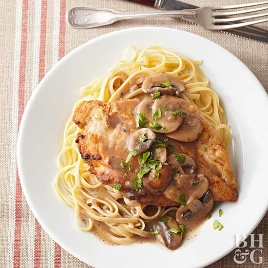

Chicken Marasala

What is Bruschetta?
Chicken Marsala is a succulent dish that features thinly sliced pieces of pan-fried chicken breast and mushrooms in a reduced wine sauce.
Its name comes from the fortified Italian wine used to give the dish its trademark deep, nutty, and slightly sweet flavor.
How to make chicken marsala
Make a restaurant-quality chicken dish at home in just 30 minutes. You'll find the full recipe below with step-by-step instructions,
but here's what you can expect when you make this top-rated recipe:
Begin by coating chicken in a seasoned flour mixture. Cook chicken breast in a large skillet over medium heat until lightly brown.
Add mushrooms, wine, and sherry to the mix before covering the skillet and simmering for around 10 minutes.
Ingredients
- 1/4 cup all-purpose flour for coating
- 1/2 teaspoon salt
- 1/4 teaspoon ground black pepper
- 1/2 teaspoon dried oregano
- 4 mdium skinless, boneless chicken breast halves - pounded 1/4 inch thick
- 4 tablespoon butter
- 4 tablespoons olive oil
- 1 cup sliced mushrooms
- 1/2 Marasala wine
- 1/4 cup cookin sherry
How to make chicken marasala step-by-step
-
In a shallow dish or bowl, mix together the flour, salt, pepper and oregano. Coat chicken pieces in flour mixture.
-
In a large skillet, melt butter in oil over medium heat. Place chicken in the pan, and lightly brown.
Turn over chicken pieces, and add mushrooms. Pour in wine and sherry. Cover skillet; simmer chicken 10 minutes,
turning once, until no longer pink and juices run clear.
Back to Home